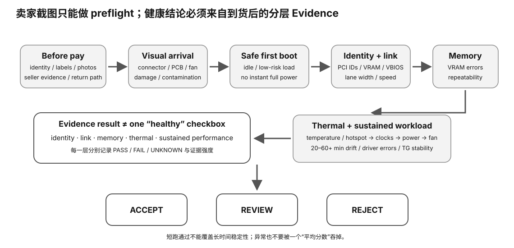

开始前，你应该知道二手 GPU 验收至少要分成 identity、link/path、functional load、sustained stability 与 acceptance decision 几个层次；型号字符串只能覆盖第一层的一小部分。
卖家说“点亮正常、驱动识别、跑分也有”，但你真正关心的是这张卡装进自己的本地 LLM 主机后，PCIe 链路、显存、持续负载、错误计数和稳定性是否都满足用途。
真正的问题是：在付款或最终收货前，什么证据足以把一张二手卡从“看起来能用”推进到 PASS；出现哪些身份、链路、错误、温度或稳定性信号时必须 FAIL / UNKNOWN / BLOCKED？验收结论必须来自预先定义的标准，而不是测试后临时放宽。

型号 VRAM 板卡/子厂 接口 工作状态
然后逐个找独立证据。
PCI vendor/device/subsystem BDF / UUID runtime product name VRAM VBIOS board info
字段互相一致，可信度才提高。
你买卡就是为了 24 GiB：
卖家：24 GiB 驱动/runtime：约 12 GiB
这不是小误差，是购买关键 claim 冲突。
你可能在 idle 时看到低 current state。
current link != max capability
而且主板、CPU lanes、riser、bifurcation 都可能限制链路。
max/capable Gen + width current negotiated Gen + width
如果要判断负载状态，再在普通 workload 下观察。
很多消费卡没有你期待的 ECC/RAS 字段。
NOT_SUPPORTED != 0 errors
写 N/A，继续用其他证据。
uncorrectable ECC/RAS repeated XID/runtime error PCIe recovery/replay异常增长 bad pages 普通 inference 反复 crash
但每个字段是否支持，要看具体卡和驱动。
这个 30 秒窗口没看到错误
只意味着这个。
不意味着：
永久可靠 所有显存地址都好 所有 DP/HDMI 都好
直接复用课程 sustained TG：
固定 model SHA 固定 runtime 重复 TG 记录 temp / clock / errors
因为你买卡就是为了 Local LLM。
温度 + clock + TG drift + limiter/event
一起看。
如果你只做 headless inference：
HDMI 坏 但 compute 稳定
可能是你愿意接受的折价缺陷。
但必须明确记录，不能当“全好”。
刷 VBIOS 超频/降压 改 power limit 错误注入 破坏性 VRAM stress
先把只读证据和普通工作负载做扎实。
ACCEPT REVIEW REJECT
不要写：
“看起来应该没问题”
seller claim + identity + VRAM + PCIe + error state + sustained TG + thermal + physical/display → decision
硬件门槛：L0 模型/设计主路径；真机实验按页面对应 L1–L3。
成本：0 元教学主路径；不要求购买、拆修或高风险改造。
风险：默认 safe；涉及 PSU/硬件时只做只读调查与厂商手册约束下的正常安装，不做带电拆装。
做 Experiment 86：acceptance model；有真实二手卡时做 Experiment 87：real used-GPU acceptance。
完成一张 acceptance matrix：identity、link、memory/error、sustained workload、thermal/power、observed anomalies；每项给 ACCEPT/REVIEW/REJECT 与 evidence path。
换 GPU、模型或平台后，从 hard gates 重新算，不继承旧机器的 PASS；任何新未知都回到 evidence collection，而不是靠经验口头补齐。
Stage 0: seller claims Stage 1: physical identity Stage 2: firmware/runtime identity Stage 3: VRAM / PCIe / telemetry Stage 4: representative LLM workload Stage 5: sustained stability Stage 6: ACCEPT / REVIEW / REJECT
越靠后的证据越贵，但也越接近“这张卡真的适合你的用途”。
listing: RTX 3090 24GB sticker: RTX 3090 runtime: RTX 3090, 24576 MiB PCI subsystem: unexpected board vendor
这不是自动 REJECT，但应该进入 REVIEW：确认是否换壳、OEM/特殊板、维修替换或识别异常。关键是冲突必须被解释，而不是被平均掉。
seller claim snapshot device identity VRAM PCIe max/current driver/runtime identity error/event state benchmark manifest raw PP/TG thermal/clock trace physical notes final decision + reason
当证据不足或某字段异常但尚不能证明硬件故障时，REVIEW 能防止“未知=失败”和“未知=通过”两种错误。
任何异常都优先保存 Evidence，再改变变量。验收流程不要求拆卡、刷 BIOS、改电压或做危险硬件操作。
| 阶段 | 优先目标 | 不能宣称 |
|---|---|---|
| 快速初检 | identity/VRAM/明显物理异常/基本枚举 | 长期稳定 |
| 受控验收 | 代表性 LLM workload、错误/热/clock、重复运行 | 覆盖所有显存地址和接口 |
| 后续使用 | 更长时间的真实 workload 可靠性 | 未来永不故障 |
这能防止“10 分钟没崩 = 全好”和“一个 unsupported telemetry 字段 = 坏卡”两种极端。
identity/容量已经通过，但 acceptance 还没完成。下一步看 temperature、clock、power limiter、error/event 与环境风道；如果性能在相同 workload 下不可接受地漂移，就按你的 prewritten acceptance policy 进入 REVIEW/REJECT，而不是因为型号正确就接受。
must-match identity: required VRAM: allowed physical defects: representative workload: minimum sustained behavior: error conditions: thermal/power review conditions: return window/deadline: ACCEPT / REVIEW / REJECT rules:
先写规则能减少“已经到手了就想办法说服自己留下”的沉没成本偏差。
如果出现异常，先保存 seller claim、时间、原始日志/截图、runtime identity、测试命令与状态，再决定是否重测。退货窗口内避免会改变卡况或争议证据的刷 BIOS、拆修、改焊、高风险改造。
本课程的普通 workload 验收不是芯片厂生产测试，也不能保证覆盖每个 VRAM cell、显示口或极端环境。验收目标是为你的 Local LLM 使用建立足够可信、风险可接受的购买 Evidence。